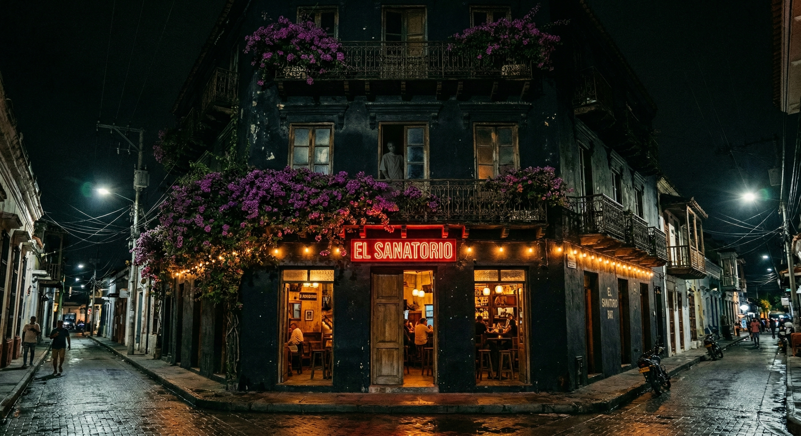

Patio Yakitori · Bar de Terror · Casa del Horror
"Ella siempre ha estado aquí."
✦ Calle 19 #4-23, Centro Histórico, Santa Marta ✦
El Sanatorio existe en tres capas. Cada una tiene su propio mundo, su propio ritmo, y su propio nivel de riesgo.
Patio abierto en la calle. Yakitori al carbón y street food colombiana. Acceso libre desde Calle 19 — sin reserva, sin boleto. Donde empieza todo.
12:00 PM – 2:00 AM · Entrada libre →
Bar de cócteles en un antiguo laboratorio clínico. Azulejos blancos, puertas institucionales, iluminación de quirófano. Coctelería exclusiva con Be Vida spirits.
5:00 PM – 3:00 AM Jue–Dom · Reserva recomendada →
Casa del terror profesional. Actores en vivo, escenas cinematográficas, pasillos que no terminan donde deberían. Grupos de 4–8. Sin garantía de salida tranquila. Inspirado en el modelo de Spookers NZ.
6:00 PM – 12:00 AM Mié–Dom · Boletos: COP 55,000 →
El patio que da a la calle. Abierto desde el mediodía. Sin reservas, sin boletos. La primera zona del sanatorio — donde los transeúntes de Calle 19 dejan de ser turistas y se convierten en pacientes.
Actores en vivo, efectos de sonido espacial, pasillos que no terminan donde deberían. Grupos de 4–8 personas. Sesiones cada 20 minutos. Inspirado en Spookers — la atracción de terror más premiada de Nueva Zelanda. Primera experiencia de este nivel en la Costa Caribe colombiana.
"El terror no está en los monstruos. Está en entender qué pasó aquí y darse cuenta de que podría volver a pasar."
ARCHIVO: SANATORIO DEL NORTE
SANTA MARTA — COLOMBIA
CLAUSURADO: 1969
Durante las obras de rehabilitación del edificio encontraron algo que el contratista no supo cómo reportar. En el expediente de inspección figura solo como "hallazgo inusual en zona restringida."
La niña había estado aquí desde los años cincuenta. Cuando el sanatorio cerró, nadie fue a buscarla. Ella nunca se fue. Aprendió a vivir con lo que había: los pasillos, la luz que entraba por las grietas, las canciones que ella misma se inventaba para no olvidar el sonido de una voz.
"Cuando la encontramos ya no era una niña. Pero seguía cantando como una."
Decidimos no echarla. Decidimos abrir el sanatorio para ella. Que hubiera gente otra vez. Que los pasillos tuvieran pasos. Que el patio interior tuviera un motivo para las flores.
Ella está en el patio por las tardes. Canta. Las enfermeras han vuelto. Los médicos están de turno. Y los visitantes — ustedes — son sus invitados. Sonríe cuando llega gente nueva.
Ella siempre ha estado aquí.
| Lunes | Cerrado |
| Martes | Cerrado |
| Miércoles | 6 PM – 1 AM |
| Jueves | 6 PM – 1 AM |
| Viernes | 6 PM – 2 AM |
| Sábado | 6 PM – 2 AM |
| Domingo | 5 PM – 12 AM |
[ TABLERO DE ANUNCIOS — PERSONAL INTERNO ]
RED WIFI — PERSONAL AUTORIZADO
Red: HospitalDelTorax_Pacientes
WiFi disponible — solicita la contraseña al hacer check-in.
No compartir con visitas. Ella vigila.
Complete el formulario de admisión. El Doctor de turno confirmará su cita.